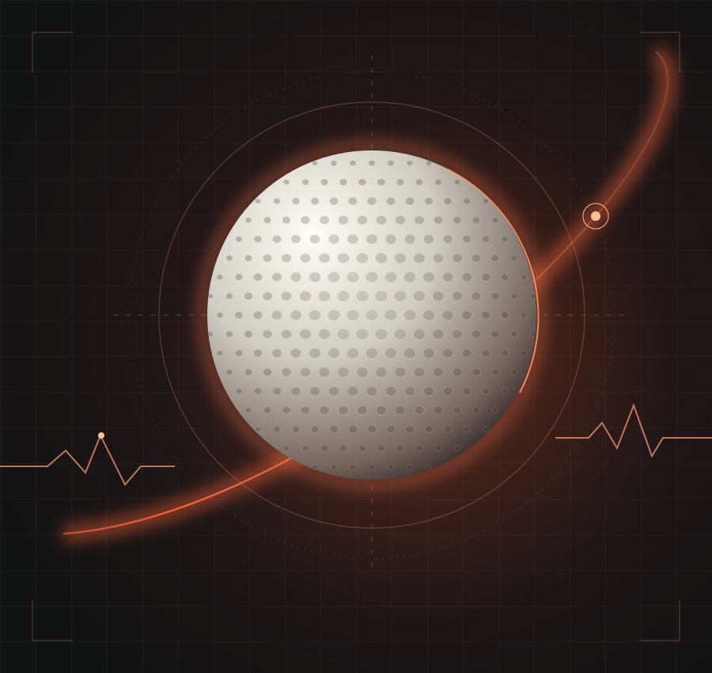

Self-trust and oxytocin
Can trusting a club and your own decision influence oxytocin release? That’s my hypothesis. Studies of trust between people don’t establish that it happens on the course, and I don’t measure or promise oxytocin release.
Mobile golf performance / Maine
Build Trust between your mind and body through your golf clubs by extinguishing fear through the Power of Oxytocin.
That’s the theory behind my coaching. Whether this kind of practice releases oxytocin is an open question.
Start on the range with the Foresight GCQuad. Finish in the hole on the course. I help you learn what each club does in your hands, make a clear decision, and trust yourself again after the inevitable miss.

The method
We start on the range with the Foresight GCQuad. We look at your usual carry and misses, not just the shot you’d show your friends. On the course, that gives you a reason to trust the club as you pull it from the bag. I use network shifting as a coaching lens: the executive network helps you weigh the decision, then you move your attention to the shot and let the practiced motion take over.
Use what you know about your clubs. Read the lie, wind, and target, then pick the shot you actually have.
Once you pull the club, make the swing you chose. One cue is plenty. The time for debate was behind the ball.
Mistakes are inevitable. Take one useful lesson from the miss, breathe, and give the next shot a clean decision.
A word from Dr.Al
Communication.
How can we communicate with our clubs? Are you nuts?
The Latin root of the word communicate, communicare, means “to make common.”
Sure, you may be flesh and bone. And your clubs may be steel or graphite. But you do have something in common. Together, you are trying to get a small ball to go inside a hole that is very far away. And as long as you have that in common, you can communicate.
Fine, but how?
The same way you communicate with your partner. Touch and feel. The more you touch, feel, grab, grip, and thrust, the more satisfied you (and your club) will be 😉.
The science I’m exploring
Can trusting a club and your own decision influence oxytocin release? That’s my hypothesis. Studies of trust between people don’t establish that it happens on the course, and I don’t measure or promise oxytocin release.
A comfortable, unforced breath can be part of a reset after a miss. Breathing can affect HRV through several mechanisms. I coach the reset, not direct control of your nervous system.
Where the device supports it, compare readings taken during similar quiet pauses across rounds. Breathing, walking, terrain, and sensor motion can change the reading. Higher isn’t always better, and HRV can’t tell us whether oxytocin was released.
Your swing will change because your body and mind will change. Neuroplasticity is your capacity to keep learning from experience. That’s why every round is another chance to build trust.
Oxytocin and trust research · Breathing and HRV study · Golf putting and HRV study
The mobile setup
I bring the complete Foresight GCQuad simulator to suitable backyards and indoor venues anywhere in Maine. Sessions run 2–6 hours. We can work on your game or set up a hosted golf session.
The setup needs 20 ft long × 12 ft wide × 12 ft high of clear, level space. Confirm swing clearance, overhead obstacles and outdoor conditions before setup.
Foresight GCQuad field notes
On the range, compare the carry and shot pattern of the clubs you actually reach for. On the course, use that information to choose a target and commit.
The feedback
The Foresight GCQuad tells you what you can ask of a club. The course tells you how well you commit to that choice and reset after a miss. We track shot results and your routine first; HRV and EEG can add context.
Performance
Compare shot dispersion, target success and whether you repeated your pre-shot routine under similar conditions.
Optional
Look at resting trends or comparable quiet pauses during a round when your device supports them. Don’t compare standing on the tee with walking uphill.
Exploratory
When equipment is available, explore readings at rest or during controlled putting. Motion and muscle activity can distort EEG; this is not diagnostic testing.
Meet Dr.Al
I earned my MD, completed TPI Medical Level 2 certification, and founded and ran Holey Club, an indoor golf facility in Norwich, Connecticut.
My background in transcranial magnetic stimulation (TMS) and interventional psychiatry taught me to respect a baseline, repeat the setup, and look for change over time. I bring that discipline to golf. No brain stimulation, no clinical testing, and no promise that your ball will listen.
Read my bioStart where you are
New golfers build a routine. Regular players can narrow their misses. Competitive players and pros can test what happens when a shot has a consequence. Pick a goal to see how we’d measure it.
Try ten putts at the same distance, then repeat with a one-ball, must-make format. Track makes and whether you followed the same routine.
This planner doesn’t book a session or send or store personal data.